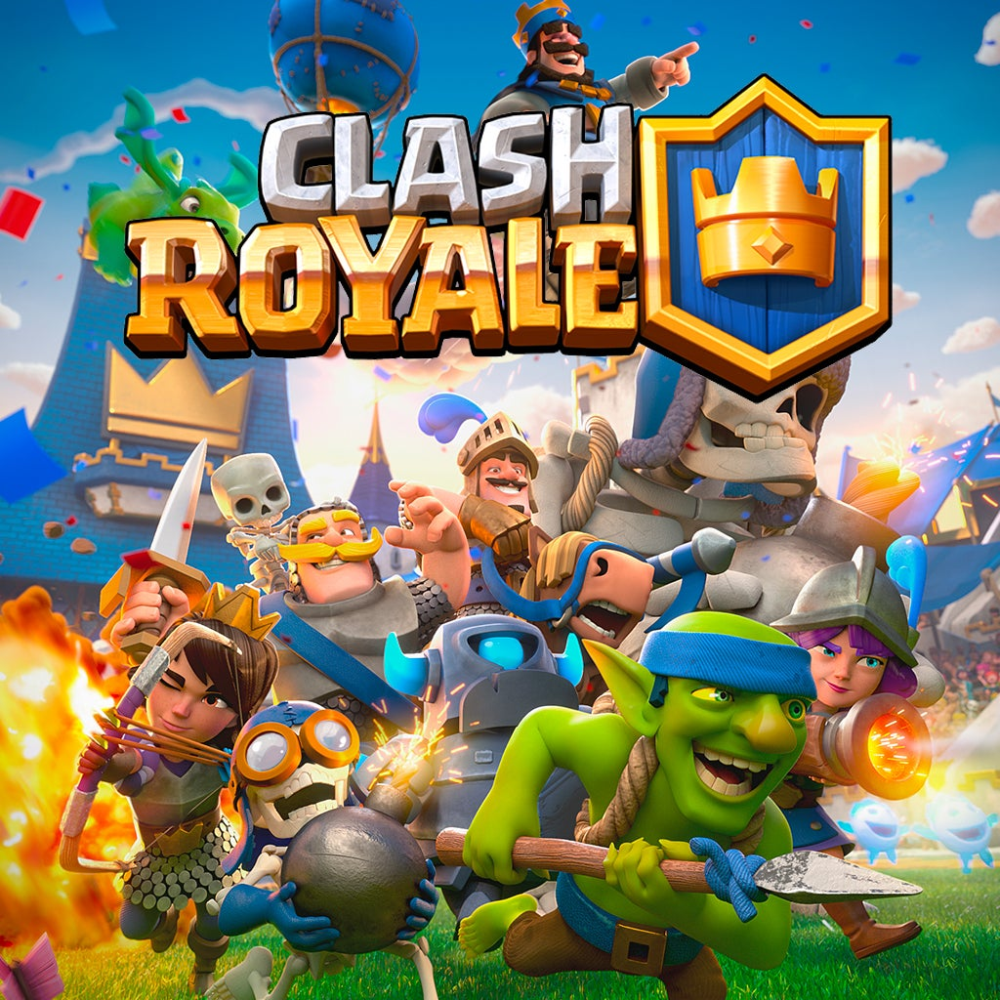

Composition d'un Deck : Un deck est composé de 8 cartes. Parmi ces 8 cartes, il est possible d'inclure au maximum 2 évolutions et 2 héros. Les cartes restantes doivent obligatoirement être des cartes basiques.
Les Synergies : Lorsque les cartes d'un deck se complètent bien entre elles, elles créent des combinaisons puissantes et souvent faciles à jouer, car il ne s'agit pas de cartes demandant un niveau technique élevé.
Exemples de decks populaires : Voici quelques exemples de decks réputés pour leur efficacité et leur facilité de prise en main :